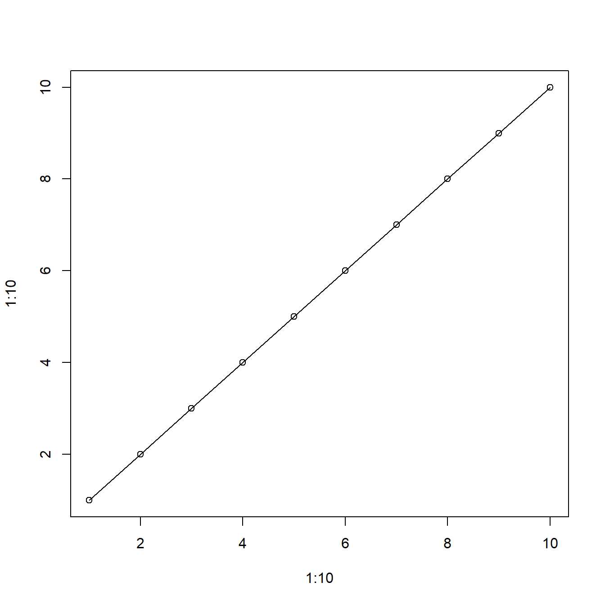
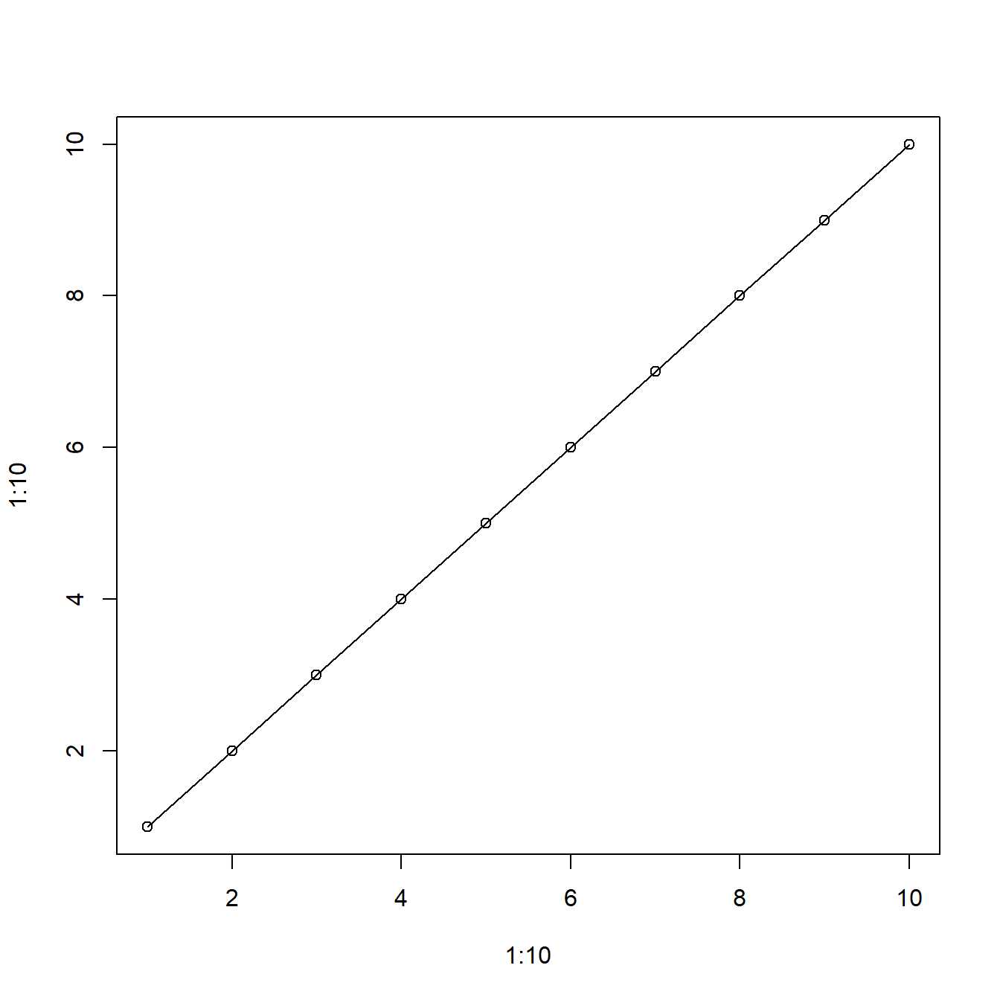
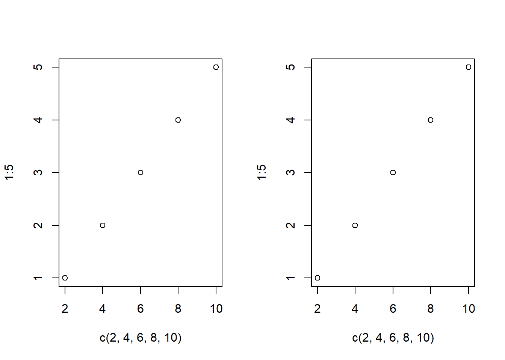
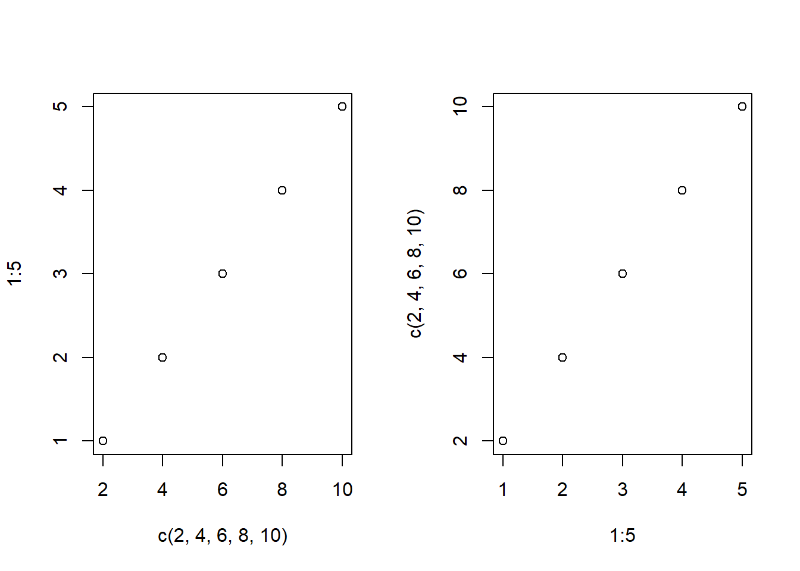
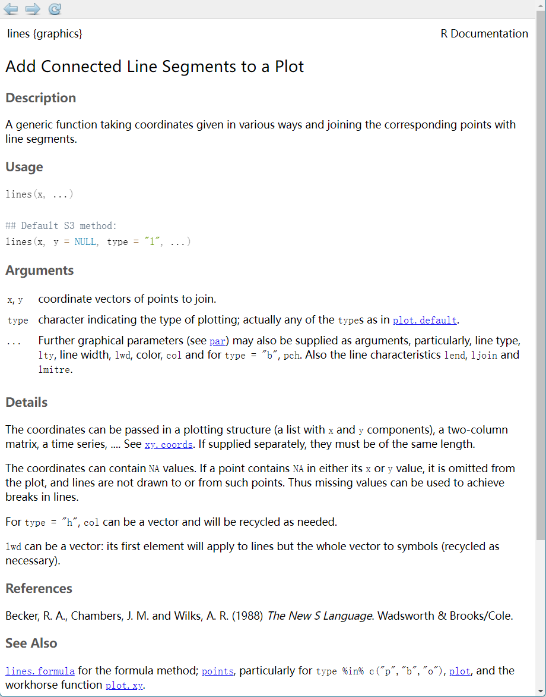
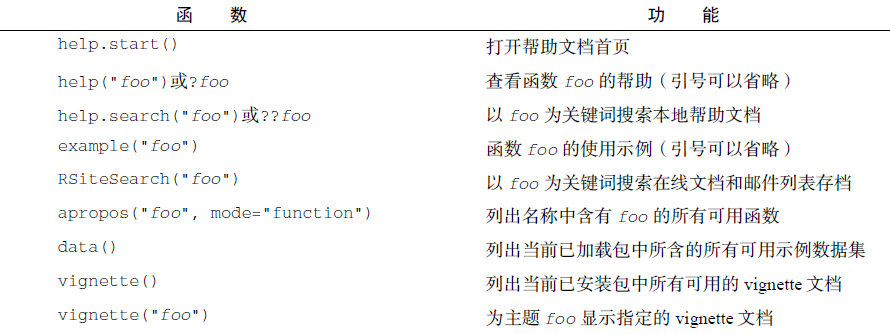
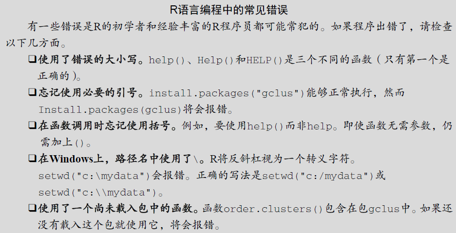

plot(1:10,1:10) # 画图
lines(1:10) # 添加一条线
函数的英文是function，所以函数是用来实现特定功能的、由别人整理好的一段代码，通常一个R包会包含多个函数。这就好比一个手机APP可以做多个事情，比如微信可以用来文字聊天、视频聊天、查看订阅号消息等，甚至还可以看直播。
一个R包里面有多个函数，这些函数也可以实现不同的功能。比如graphics包里面的两个函数：
plot(1:10,1:10) # 画图
lines(1:10) # 添加一条线
这里的plot()就是一个函数，可以实现画图功能。当你运行plot(1:10,1:10)之后，它会为你开辟一片空间用于画图，然后把这个图的框架（4条框以及坐标等）给你画出来，然后把点也给你画上去，这就是这个函数的功能（当然它还有其他功能）。
当你接着运行lines(1:10)之后，它会给你画一条线，这就是lines()这个函数的功能。
当我们在使用某个手机APP时，肯定是要先打开这个APP，然后才能使用它，R包也是如此，一定要先加载R包，才能使用R包里的函数。
这个plot()函数是graphics包里面的，这个R包是R语言自带的（有些自带的不需要加载也能使用），不需要额外安装，使用时也不需要加载（即不需要先library(graphics)），自己安装的R包是需要先加载才能使用里面的函数的。
比如ggplot()函数是属于ggplot2这个R包的，这个R包是需要自己安装的，所以在使用前需要先加载才能使用：
# 先加载对应的R包
library(ggplot2)
# 才能使用里面的函数
ggplot()
我经常看到有人把函数当做R包，然后使用install.packages("")进行安装，非常错误的做法，比如有一个R包叫rms，其中有一个函数叫lrm，有的人不明所以，直接使用install.packages("lrm")，结果报错:
install.packages("lrm")
将程序包安装入‘C:/Users/liyue/AppData/Local/R/win-library/4.3’
(因为‘lib’没有被指定)
Warning in install.packages :
package ‘lrm’ is not available for this version of R
A version of this package for your version of R might be available elsewhere,
see the ideas at
https://cran.r-project.org/doc/manuals/r-patched/R-admin.html#Installing-packages你要安装的是R包，不是函数，千万要注意，别犯这种低级错误。
每个函数都有特定的参数（argument），比如上面的plot(1:10,1:10)，其中的1:10就是plot这个函数的参数，你也可以写成plot(x = 1:10, y = 1:10)：
plot(x = 1:10, y = 1:10)
这也是完整的写法，其中的x、y被称为形式参数（简称形参），1:10被称为实际参数（简称实参）。
形参是函数的作者规定的，这个名字如果你写了，就要写对，不能乱写，必须按照人家的规定来，实参是需要你自己提供的。
如果你写了形参的话，可以不用管参数的顺序：
opar <- par(mfrow=c(1,2))
# 先写x或y都不影响
plot(x = c(2,4,6,8,10), y = 1:5)
plot(y = 1:5, x = c(2,4,6,8,10))
par(opar)形参是可以省略的，但是省略后要按照作者规定的顺序提供实参，不然就会出问题（初学者建议写上形参），比如：
opar <- par(mfrow=c(1,2))
# 不写形参先后顺序有影响，会默认第一个是x,第二个是y
plot(c(2,4,6,8,10), 1:5)
plot(1:5, c(2,4,6,8,10))
par(opar)这些参数是有要求的，不按照规定写就会报错。比如：
NA或者缺失值，如果你提供的数据里有NA或者缺失值，那么它肯定会报错。这个东西是很机械的，不可更改，函数的作者规定的，不按照要求写必然报错！
还有一些参数是有默认值的，如果你没有指定，它就会使用默认值。比如：
?t.test
# 其中的mu = 0, paired = FALSE, var.equal = FALSE,
# conf.level = 0.95 都是默认值如何知道每个参数的具体要求及函数的使用方法呢？我们可以直接查看帮助文档。帮助文档是函数的开发者按照一定的要求写的、能够让使用者快速理解函数用法的文档。
绝大多数R语言中的函数都可以通过?xxx或者help(xxx)查看函数的帮助文档（自己安装的R包需要先加载），比如：
# 以下两种方法都可以
?lines
# 或者
help("lines")当你运行上面的代码后，在Rstudio右侧help面板中会出现该函数的帮助文档，如下图所示：

帮助文档是学习函数用法的最好方法，这也是你以后最常用的学习方法（当然有些帮助文档写的很烂）。
很多人一看到英文就头大，那么这样的话你可能不适合学R语言，绝大多数函数的帮助文档和报错信息都是只需要英语4级水平即可理解的，没有任何难度，只需要你认真去读一读就能得到很多信息！（只学到这里不往下学的话估计还是看不懂帮助文档的，大概就是单词你都认识，但是不知道什么意思）
比如，在上面这个帮助文档中：
Description，这部分会简要的告诉你这个函数是干啥的，比如这个函数的描述告诉你，这个函数可以使用不同方式给出的坐标，并把点连接成线。Usage，这部分主要是展示这个函数的基本用法，以及有哪些参数，比如lines有两种用法，要么是lines(x, ...)，要么是lines(x, y = NULL, type = "l", ...)。Arguments，这部分是参数的细节，这部分会详细告诉你，每个参数接受哪种类型等。比如x,y，这两个参数需要一个vectors，也就是一个向量，此时你必须提供一个向量，如果提供其他类型，必然报错！如果现在的你还是无法理解帮助文档的内容，也不用着急，因为初学都是这样的，随着学习的深入，你会越来越得心应手。
很多初学者喜欢直接复制粘贴别人的代码，然后直接把数据换成自己的，绝大多数都会遇到报错，无法运行。主要原因就是不知道每个函数的具体要求，别人的代码是按照要求写的，自然可以运行，你的东西和别人不一样，不符合函数的要求，必然报错。
以下是一些常用的帮助函数，你可以自己输入一下试试看，多敲代码是学习编程的最好方法：

自己学习以上代码时记得把对象的名字换成自己想看的，你输入上面的foo必报错！
关于R包的函数使用时的常见错误：
